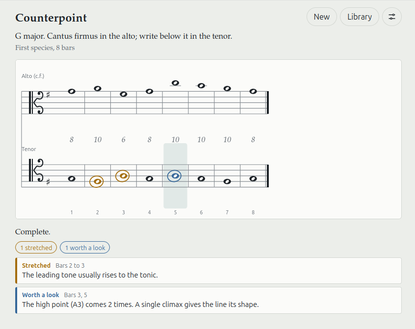

Counterpoint Tool

A tool for practicing counterpoint exercises, with a focus on the methods and teachings found in Schoenberg's Preliminary Exercises in Counterpoint. Created by Claude Opus 5.5.
Compositions
'For Rupert' - String Quartet
I wrote this piece - my first for string quartet - following the passing of a pig named Rupert at Willowfields Sanctuary and Rescue, where I had been volunteering. The piece is heavily inspired by the work of Debussy, and to a lesser extent Beethoven. It was performed recently at the Nordic Church in Liverpool by the Q-Quartet.
Original folk songs
These songs are a product of two interests: folk songwriting and
classical guitar. I was heavily inspired by the writing of Joanna
Newsom and Joni Mitchell to explore unusual themes and structures,
which the study of classical guitar helped me achieve. In these
pieces I try to balance some amount of structural and tonal
complexity, with general listenability, while lyrically I reach for
remote metaphors, invoking landscapes, animals, and nature.
All words and music are written by me. The song Low Tide was
recorded and mixed by Tristan Apperley,
who also performed violin on the track.
Older compositions
These pieces precede my interest in classical music, and are more reflective of an interest in prog rock, electronic music, and video game soundtracks. Indeed, the track 'Cat Person' was explicitly written as a portfolio piece that would fit in with an Animal-Crossing style video game. These pieces were created using FL Studio and are almost completely MIDI sequenced. I'm proud of the results of experimenting with synthesizers and MIDI sequencing here, and it is an area I would like to revisit in the future.
Recordings
I've spent many years playing and recording bass for bands in the Liverpool scene, in the genres of rock and pop. Generally I've been given the leeway to write my own basslines. I find it fun and instructive to work creatively to someone else's vision, and in an idiom I wouldn't necessarily choose myself. Below are a few examples of tracks I've appeared on.